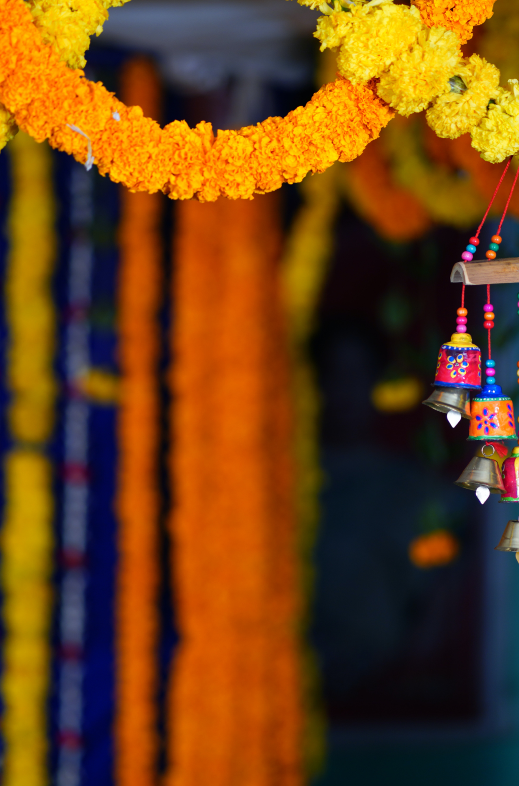
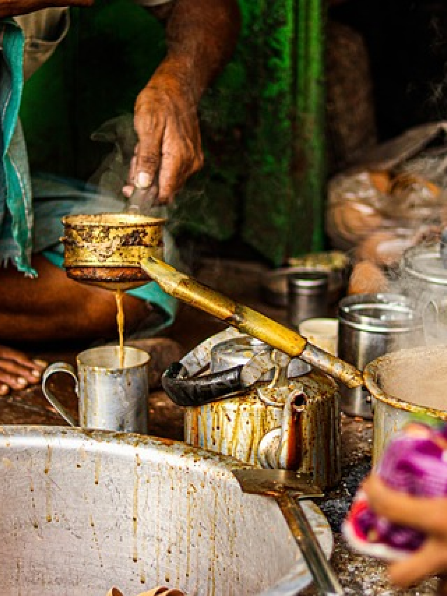
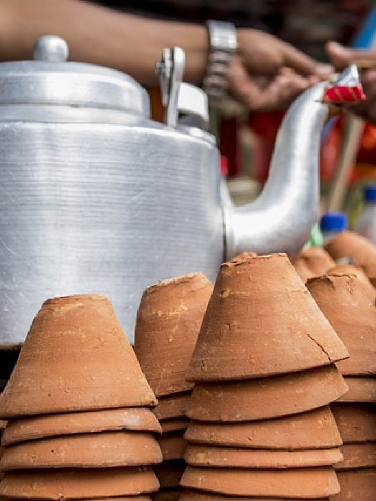
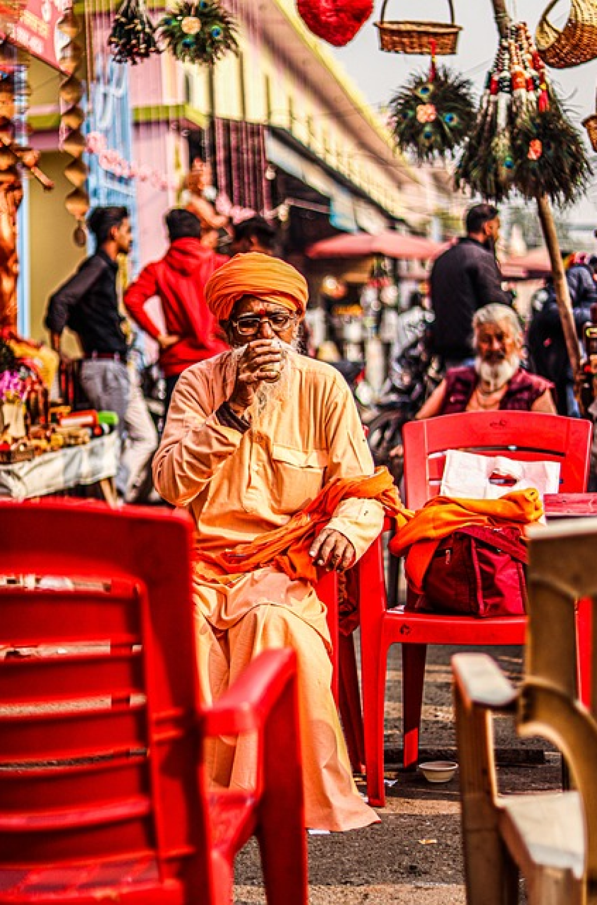

La festa del tè si tiene solitamente nel mese di novembre.
È possibile partecipare prenotando pacchetti turistici speciali che includono alloggio, trasporti e attività legate al festival.
Diverse agenzie di viaggio offrono tali pacchetti, quindi è consigliabile cercare informazioni e prenotazioni tramite queste agenzie o visitare il sito web ufficiale del Festival del Tè di Darjeeling per ulteriori dettagli.
Festival del tè a Darjeeling
Il Festival del Tè di Darjeeling si svolge nella pittoresca regione montuosa di Darjeeling, celebre per i suoi tè pregiati.
Durante l'evento, i partecipanti possono immergersi nella cultura del tè indiano, degustare tè freschi appena raccolti e apprendere le tecniche di degustazione; Gli appassionati inoltre hanno anche la possibilità di visitare le piantagioni di tè.



Il Festival di Darjeeling è davvero un'esperienza indimenticabile per coloro che desiderano immergersi nella cultura del tè indiano. La calda accoglienza degli abitanti del luogo, la bellezza mozzafiato del paesaggio e la ricca varietà di tè offerti rendono questo festival unico.
